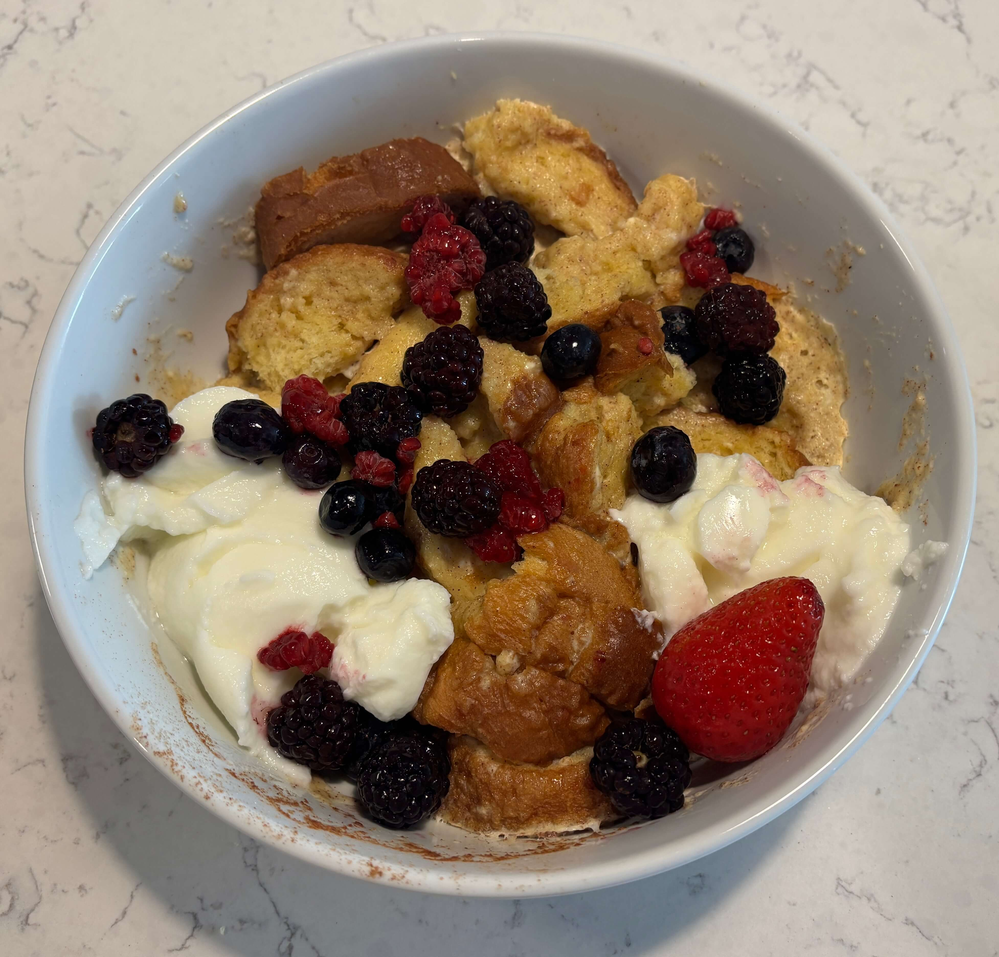

Home
French Toast Bowl

1 serving
Ingredients
- 3 slices of brioche bread
- 2 eggs
- 3/4 cup yogurt divided
- 1 tsp sugar
- 1/2 tsp vanilla extract
- 1/2 tsp cinnamon
- 1 cup frozen mixed berries, thawed
- Maple syrup
Steps
- In a medium microwave safe bowl, whisk togetehr eggs, 1/4 cup of the yogurt, sugar, vanilla, and cinnamon.
- Chop the bread into 1" cubes and add to the bowl. Gently stir until all pieces are coated. Let sit for 2 to 3 minutes so the bread can absorb the mixture
- Microwave for 3 1/2 minutes, or until the eggs are set and the center is cooked through.
- Top with remaining yogurt, mixed berries, and syrup. Serve warm.